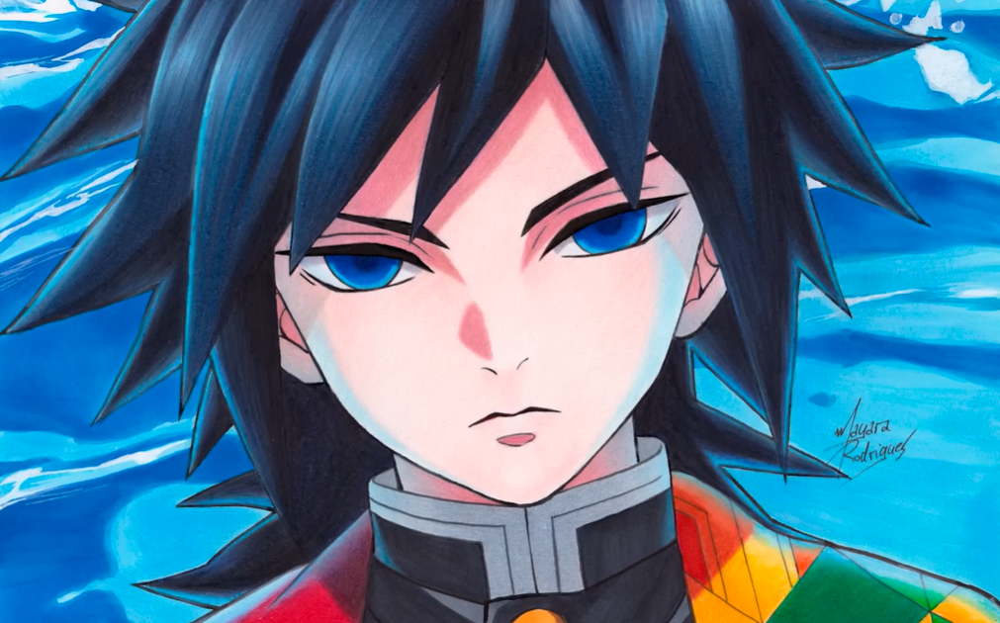
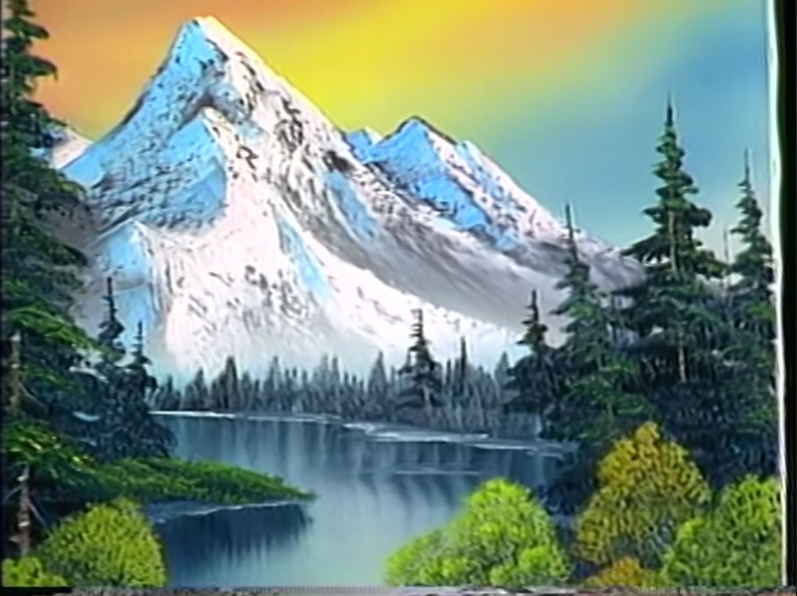

Mayara Rodrigues
Mayara Rodrigues é uma artista brasileira, na qual seu foco sempre foi desenhar personagens de animes. ela sempre foi uma grande inspiração para mim desde 2018, pois foi a época da minha vida comecei a gostar de assistir animes. após ver vídeos do canal da mayara, comecei a admirar o quão bem ela desenhava e também sentir vontade de fazer o mesmo. ou seja, foi através dos vídeos dela, que obtive essa paixão por desenhar.
.

Bob Ross
Bob Ross foi um pinto norte-americano no qual apresentava a série de televisão pública "the joy of painting". Bob ross vem sendo uma grande inpiração pra mim desde novembro de 2025, pois foi a época da minha vida que comecei a gostar de pinturas. as pinturas em tela nunca havia sido um tipo de arte obtive muito interesse em fazer, porém após ver os vídeos dele, tudo mudou. o seu jeito calmo de ensinar e realizar tutoriais de pinturas me cativou, fazendo com que eu obtivesse uma grande vontade de começar a pintar e fazer minha primeira tela. ou seja, foi através de seus vídeos que iniciou-se esta minha paixão por realizar pinturas em tela.
.
